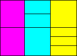

|
|
|

|
History of Kappa
|
- Kappa-I(1985〜1987)
This was an experimental sequential DBMS, which ran on
Personal Sequential Inference Machine PSI.
It was written in ESP(Extended Self-contained Prolog).
- Kappa-II(1987〜1989)
This was a functionally enhanced version of Kappa-I, which
had nested relational GUI and supported extended relational
algebra.
It was sufficient for storing and operating electronic dictionaries
in natuaral language processing, mathematical knowledge
in proof checking systems and molecular biological data in
genetic information processing systems.
An existing deductive object-oriented database language Quixote
originates in Kappa-II.
- Kappa-P(1988〜1994)
This was a translation of Kappa-II in KL1, which means it was a
parallel DBMS. It ran on Parallel Inference Machine PIM.
- Kappa(at present)
This is a ported version of Kappa-P on KLIC environments,
which runs on commercial unix machines(Sun and SunOS).
It is capable of parallel distributed processing.
However, neither GUI nor extended relational algebra is supported.
|